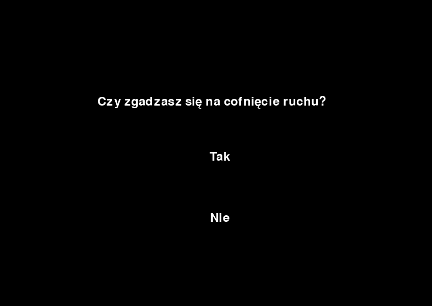

Niezależnie od rodzaju gry, w prawym dolnym rogu okna możemy zobaczyć przycisk Cofnij ruch.
Aby cofnąć swój ostatni ruch, należy:
- Kliknąć lewym przyciskiem myszy na przycisk Cofnij ruch.
Wybrać opcję Tak, gdy zobaczymy ten dialog:

Cofać można ruchy aż do początku partii!
Cofanie ruchu działa także podczas gry przez sieć lokalną. Wtedy cofnięcie ruchu musi potwierdzić obu graczy (przeciwnik może się na to nie zgodzić).